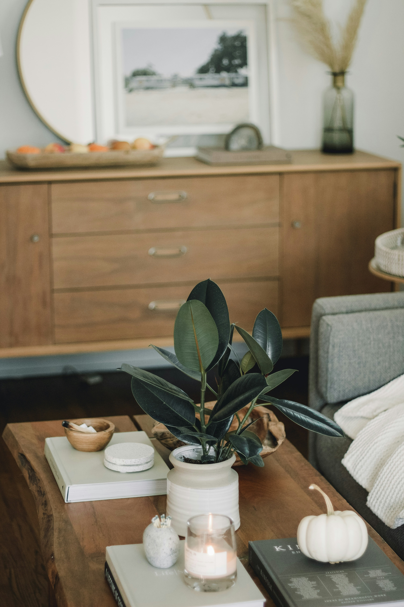
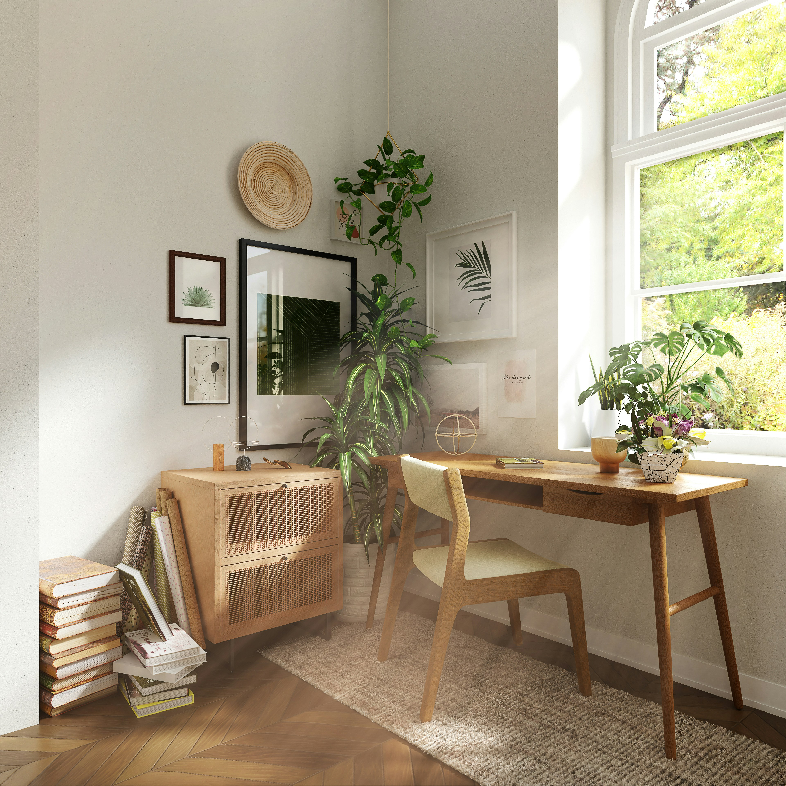
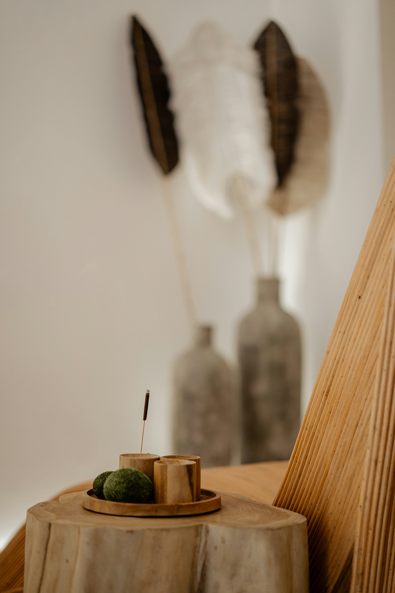

2026 COVE 라이프스타일
저널이 발간되었어요
취향을 발견하는 계절의 기록

cove lifestyle
cove lifestyle
취향을 발견하는 계절의 기록
COVE 웜 시즌 컬렉션
COVE 로컬 파트너 프로젝트
사소한 순간까지 세심히 살피는 감각으로
꼭 필요한 물건과 경험을 큐레이션합니다

일상의 감각
함께 만드는 취향로컬 창작자와 협력해 함께 성장하는
취향의 생태계를 만들어갑니다
소재부터 배송까지 투명하고 책임감 있게
품질 기준을 체계적으로 관리합니다

신뢰할 수 있는 브랜드